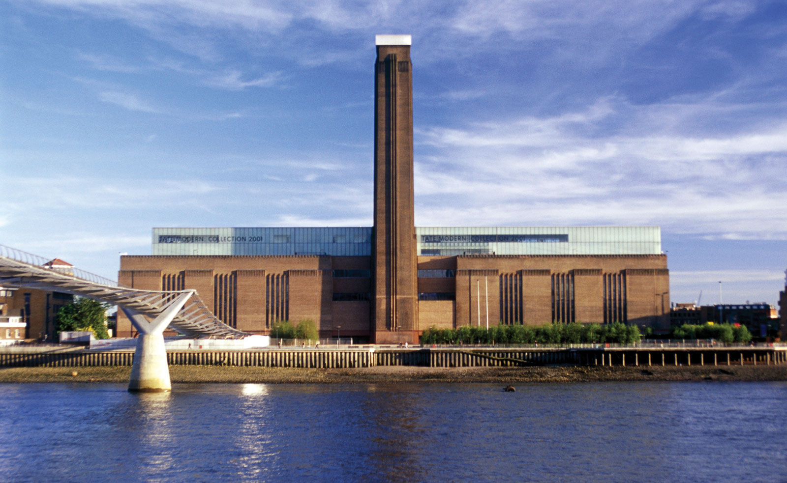

CUATRO MUSEOS DE LONDRES
Una de las grandes atracciones de Londres son sus inmunerables museos. Los más importantes museos fueron creados para la educacion y el entretenimiento del pueblo y por ese motivo siguen siendo gratuitos.
.jpg)
The British Museum
El museo Británico se fundó en 1735 y alberga antiguedades procedentes de Egipto, Roma, Grecia, Oriente Próximo y Asia, El edificio se empezó a construir en 1824, fue diseñado por Robert Smike y hasta 1997 también era la sede de la Biblioteca Británica. Seguramente sólo haya dos museos en el mundo comparables en la variedad y riqueza de sus colecciones: el Louvre de París y el Metropolitan de Nueva York.

Take Britain
En 1897 se abrió al público, al sur de Westminster, la Galería Nacional de Arte Británico, gracias la dinero aportado por Henry Tate, magnate del azúcar y coleccionista, En 1932 el museo pasó a llamarse Tate Gallery. En 2000 el museo inaguró la Tate Modern, una nueva sede situada frente a la Catedral de San Pablo, La Tate Gallery pasó a llamarse Tate Britain y alberga importantes colecciones como dedicadas a Willian Turner o a Henry Moore.
The Nacional Gallery
La nacional Gallery alberga la más importante colección inglesa de pintura de los siglos XV al XIX. Fue creada en 1824 a partir de domaciones y compras a coleccionistas particulares y desde 1838 tiene su sede en Trafalgar Square. Esta plaza está dedicada a una de las victorias más importantes de la Armada inglesa, la batalla de Trafalga de 1805, frente a las flotas francesas y españolas.En el centro de la plaza se encuentra la columna de Nelson, que dirigió la flota inglesa en la batalla y falleció en ella.
Natural History Museum
En el siglo XVII el Museo Británico ya albergaba colecciones de animales y plantas, pero en desastrosas condiciones. Para resolver la situación, En 1881 se abrió la sede actual del Museo de Historia Natural, un magnífico edificio de ladrillo de terracota, característico de la época victoriana. En sus inmediaciones se encuentra también el museo de la Ciencia y el museo de Arte y Diseño, varias reales academias de arte y ciencia y la famosa sala de conciertos Royal Albert Hall.